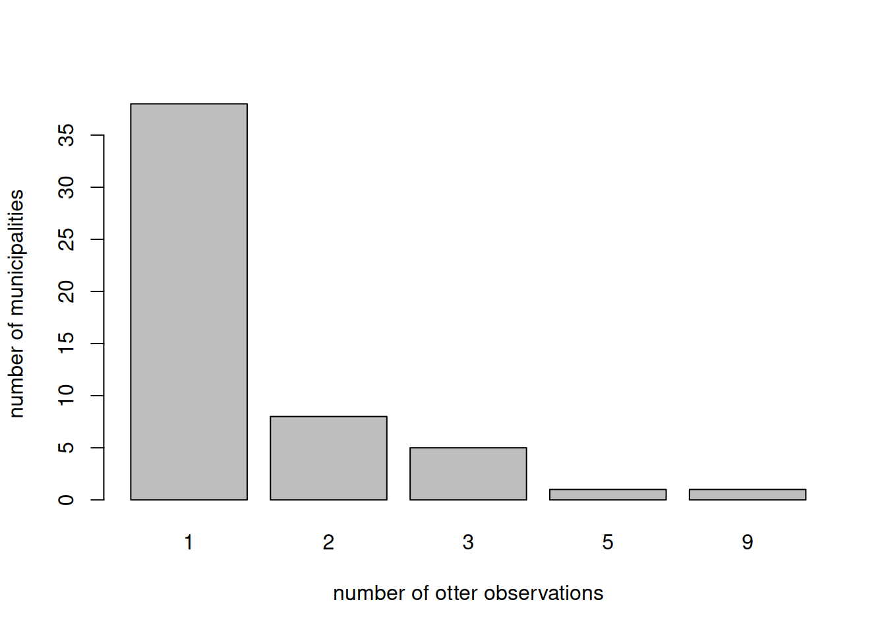
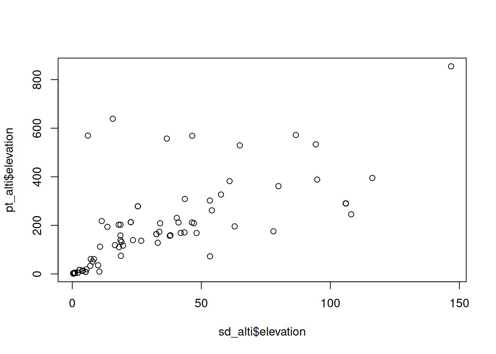
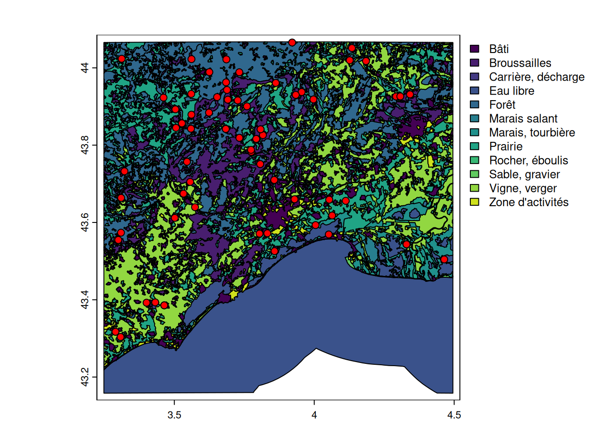

library(terra) |> suppressPackageStartupMessages()
library(mapview)
library(here) |> suppressPackageStartupMessages()Extract
At the end of this tutorial, you will be know how to:
- extract information from rasters to vectors
- extract information among vectors
- use buffers
Now that we know the basic formats (vectors addref and raster addref), let’s dive to the most interesting facet: extracting information from different data types.
There is a single key function: terra::extract().
Load the datasets
The basic data is the GBIF otter dataset. We want to characterize the environment where these occurrences happened.
otter <- read.csv(here("data", "gbif_otter_2021_mpl50km.csv"))otter <- read.csv(
"https://github.com/FRBCesab/spatial-r/raw/main/data/gbif_otter_2021_mpl50km.csv"
)# transform into a spatial object
pt_otter <- vect(
otter,
geom = c("decimalLongitude", "decimalLatitude"),
crs = "EPSG:4326"
)Points to polygon
Let’s load the administrative borders of the area and extract the commune where the otter were spotted.
poly_commune <- vect(here("data", "BDCARTO-Commune_mpl50km.gpkg"))poly_commune <- vect(
"https://github.com/FRBCesab/spatial-r/raw/main/data/BDCARTO-Commune_mpl50km.gpkg"
)Before making extraction, it is recommended to plot the data (if not too big), to make sure the projection systems are the same and the extents match. Do not use mapview (interactive map) because it will automatically project the data.
plot(poly_commune)
plot(pt_otter, add = TRUE, col = "red")
# make sure it is the same projection
crs(poly_commune) == crs(pt_otter)[1] TRUEExtract the commune
pt_commune <- extract(poly_commune, pt_otter)Which commune with most observation?
sort(table(pt_commune$nom_officiel), decreasing = TRUE)[1:5]
Saint-Maurice-Navacelles Rouet Lansargues
9 5 3
Mas-de-Londres Vailhan
3 3 Extra: How many observation per commune?
barplot(
table(table(pt_commune$nom_officiel)),
xlab = "number of otter observations",
ylab = "number of municipalities"
)
# if we want to consider all commune in the poly_commune
# create a new factor with all commune considered
obs_commune <- factor(
pt_commune$nom_officiel,
levels = sort(unique(poly_commune$nom_officiel))
)
barplot(
table(table(obs_commune)),
xlab = "number of otter observations",
ylab = "number of municipalities (log)"
)
Exercice: Do the same for land use land cover data
Points to raster
Example with numerical values
bdalti <- rast(here("data", "BDALTI_mpl50km.tif"))bdalti <- rast(
"https://github.com/FRBCesab/spatial-r/raw/refs/heads/main/data/BDALTI_mpl50km.tif"
)names(bdalti) <- "elevation"
bdalticlass : SpatRaster
size : 432, 439, 1 (nrow, ncol, nlyr)
resolution : 250, 250 (x, y)
extent : 715438.3, 825188.3, 6233959, 6341959 (xmin, xmax, ymin, ymax)
coord. ref. : RGF93 v1 / Lambert-93 (EPSG:2154)
source : BDALTI_mpl50km.tif
name : elevation crs(bdalti) == crs(pt_otter)[1] FALSEIn this case, the projection are not the same. It is recommended to project the points instead of the raster (much faster).
pt_2154 <- project(pt_otter, crs(bdalti))plot(bdalti, "elevation")
plot(pt_2154, add = TRUE, col = "red")
pt_alti <- extract(bdalti, pt_2154)boxplot(pt_alti$elevation, ylab = "elevation (m)")
Extra: compare with data from GBIF
# check with recorded
plot(
pt_alti$elevation,
pt_otter$elevation,
xlab = "elevation (m) GBIF values",
ylab = "elevation (m) BDALTI values",
asp = 1
)
# add identity line
abline(a = 0, b = 1)
Polygons to raster
example with buffer from points zonal could be faster? and mention exactextractr package which is much faster for large dataset.
Create buffer
poly_otter <- buffer(pt_2154, 1000)
poly_otter class : SpatVector
geometry : polygons
dimensions : 83, 13 (geometries, attributes)
extent : 722524.6, 819474.4, 6244001, 6331039 (xmin, xmax, ymin, ymax)
coord. ref. : RGF93 v1 / Lambert-93 (EPSG:2154)
names : key institutionCode species occurrenceStatus
type : <num> <chr> <chr> <chr>
values : 3.059e+09 iNaturalist Lutra lutra PRESENT
3.854e+09 UAR PatriNat Lutra lutra PRESENT
3.854e+09 UAR PatriNat Lutra lutra PRESENT
eventDate year month day elevation identificationVerificationStatus
<chr> <int> <int> <int> <int> <chr>
2021-01-24T15:~ 2021 1 24 NA NA
2021-01-13 2021 1 13 NA Probable
2021-01-08 2021 1 8 NA Probable
(and 3 more)
Get average elevation
mean_alti <- extract(bdalti, poly_otter, fun = mean)
plot(mean_alti$elevation, pt_alti$elevation)
Get variation of elevation
sd_alti <- extract(bdalti, poly_otter, fun = sd)
plot(sd_alti$elevation, pt_alti$elevation)
Extra: is variation linked to average slope?
Get all values
full_alti <- extract(bdalti, poly_otter)
# number of pixel per buffer (around 50)
table(table(full_alti$ID))
47 48 49 50 51 52
1 3 6 49 12 12 med_otter <- tapply(full_alti$elevation, full_alti$ID, median)With categorical raster
slightly more complicated (but there might exist a faster function)
bks <- c(0, 1, 5, 10, 50, 100, 500, 1000, 5000)
alti_class <- classify(bdalti, bks, include.lowest = TRUE, brackets = TRUE)
poly_class <- extract(alti_class, poly_otter, exact = TRUE)
summary_class <- tapply(
poly_class$fraction,
list(poly_class$ID, poly_class$elevation),
sum
)
sum_class <- rowSums(summary_class, na.rm = TRUE)
boxplot(sum_class)
perc_class <- summary_class / sum_class * 100
perc_class[is.na(perc_class)] <- 0
head(perc_class) [0 - 1] (1 - 5] (5 - 10] (10 - 50] (50 - 100] (100 - 500] (500 - 1000]
1 0 0.00000 0.00000 0.000000 0.000000 100 0
2 0 0.00000 61.36846 38.631539 0.000000 0 0
3 0 16.28031 75.27533 8.444359 0.000000 0 0
4 0 0.00000 0.00000 94.383791 5.616209 0 0
5 0 0.00000 61.36846 38.631539 0.000000 0 0
6 0 0.00000 0.00000 0.000000 0.000000 100 0
(1000 - 5000]
1 0
2 0
3 0
4 0
5 0
6 0Polygons to polygons
the land use per point or per buffer
landuse <- vect(here("data", "BDCARTO-LULC_mpl50km.shp"))landuse <- vect(
"https://github.com/FRBCesab/spatial-r/raw/refs/heads/main/data/BDCARTO-LULC_mpl50km.shp"
)In this case, faster to project the buffer point than the polygons
# project the buffer
poly_4326 <- project(poly_otter, crs(landuse))
#make sure land use and buffer are in the same projection
plot(landuse, "nature")
plot(poly_4326, add = TRUE, col = "red")
full_lulc <- intersect(landuse, poly_4326)
# visualize the intersection
mapview(full_lulc, z = "nature")full_lulc$area_km2 <- expanse(full_lulc) * 0.000001
occ <- tapply(full_lulc$area_km2, list(full_lulc$key, full_lulc$nature), sum)
#replace NA by 0
occ[is.na(occ)] <- 0
sum_occ <- rowSums(occ)
summary(sum_occ) Min. 1st Qu. Median Mean 3rd Qu. Max.
1.966 3.127 3.128 3.113 3.128 3.129 poly_4326$overlay_area <- sum_occ
perc_occ <- occ / sum_occ * 100
head(perc_occ) Bâti Broussailles Carrière, décharge Eau libre Forêt
3039400167 0.000000 55.587617 0 0 31.96645
3039481391 0.000000 0.000000 0 0 64.24183
3058935748 0.000000 14.376508 0 0 49.90804
3124766650 0.000000 13.167920 0 0 50.22884
3456660648 1.769663 3.825537 0 0 77.09612
3853886594 48.946916 0.000000 0 0 0.00000
Marais, tourbière Prairie Sable, gravier Vigne, verger
3039400167 0 12.44593 0 0.000000
3039481391 0 35.75817 0 0.000000
3058935748 0 33.10966 0 2.605794
3124766650 0 33.58404 0 3.019194
3456660648 0 17.30868 0 0.000000
3853886594 0 0.00000 0 51.053084
Zone d'activités
3039400167 0
3039481391 0
3058935748 0
3124766650 0
3456660648 0
3853886594 0# add information in the spatial vector
pt_res <- cbind(pt_otter, perc_occ)
mapview(pt_res, z = "Forêt", layer.name = "% foret")pt_lulc <- extract(landuse, pt_otter)
pt_res$LULC <- pt_lulc$nature
boxplot(pt_res$Forêt ~ pt_res$LULC, horizontal = TRUE, las = 1, ylab = "")